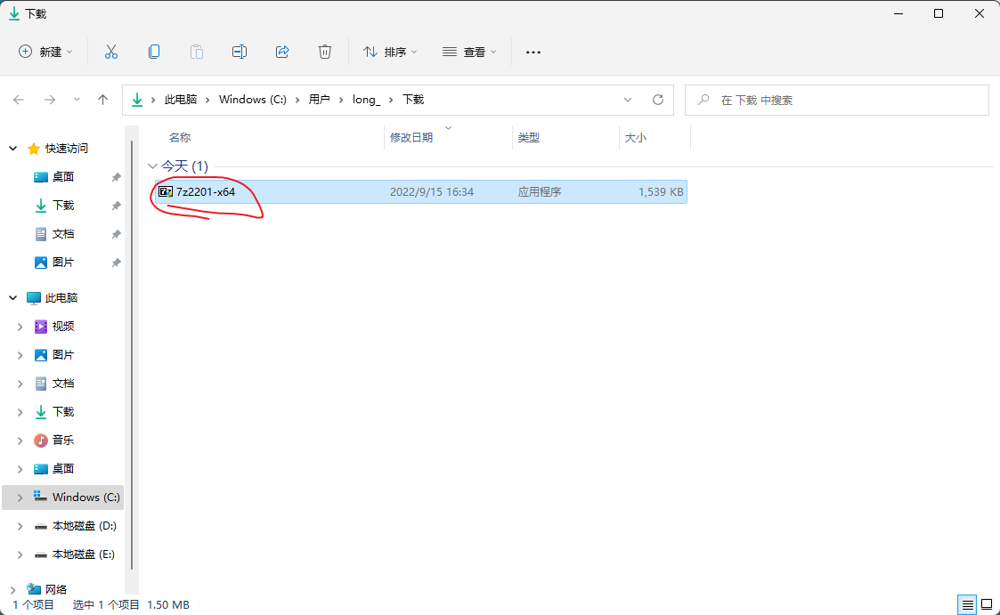

如何解压缩文件
本文以解压缩 eclipse安装包 为例。
1、下载 7zip 安装包
参考文章 https://codinglonglong.github.io/posts/ru-he-xia-zai-ruan-jian.html
2、安装 7zip，找到下载好的 7zip 安装包。
3、双击 7zip 安装包，点击 【Install】。
4、等待安装完成，点击【Close】。
5、右击要解压的目标文件，点击【显示更多选项】
6、点击【7-Zip】下的【提取到"..."】
7、正在解压。
8、解压完成，看到解压后产生的文件夹。